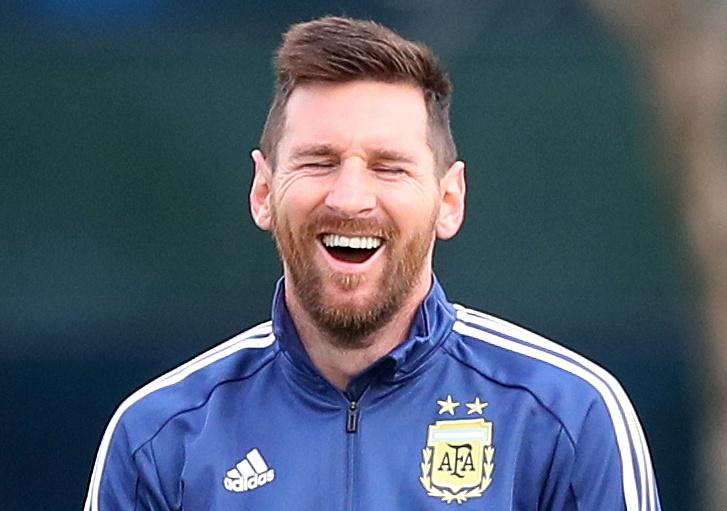

Cristiano Ronaldo no logra hacerse un lugar en el 11 titular
El astro portugués de 37 años en su paso por el Manchester United no consigue hacerse un lugar en el 11 del director técnico de los red Devils y su convocatoria para la selección portuguesa se encuentra en duda, sólo un milagro puede hacer que "el bicho" consiga hacerse con la bota de oro de la Premiere League este año.
Sir Alex Ferguson aún tiene fé en Ronaldo
El ex dirigente de los red devils aún cree que CR7 puede sobrepasar ésta mala étapa en su carrera y volver a ser un jugador de primer nivel a pesar de tener ya 37 años
La pulga se burla, ¿gesto hacia Cristiano?
El astro argentino sonrie y juega con Mbappé y Neymar mientras hace muecas de burla, la pregunta aquí es, ¿son esas burlas para su archirival CR7? Nunca lo sabremos, pero no cabe duda que Messi tiene algo entre manos.